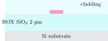

, SiO cladding ) confines light in sub-micron waveguides; from them one builds couplers, interferometers, rings, Bragg gratings, grating couplers, carrier-based modulators and Ge detectors — photonic integrated circuits fabricated in CMOS foundries.
, SiO cladding ) confines light in sub-micron waveguides; from them one builds couplers, interferometers, rings, Bragg gratings, grating couplers, carrier-based modulators and Ge detectors — photonic integrated circuits fabricated in CMOS foundries.Overview
| block | notes |
|---|---|
| waveguides | effective index method, strip/rib waveguides, group index |
| passive | directional couplers, MZI, ring resonators, Bragg gratings |
| I/O | grating couplers (and edge couplers) |
| active | silicon modulators, Ge photodetectors |
| structures | photonic crystals |
Design flow
Mode solver (FDE) → propagation (FDTD/EME) → compact models (S-parameters, same formalism as microwaves) → circuit simulation → layout (GDS) → fabrication tolerance analysis (±10 nm width changes  noticeably).
noticeably).
Picture

Engineering applications
Datacenter transceivers (400G/800G), coherent transceivers, LiDAR (optical phased arrays), biosensors (ring resonance shift), quantum photonic chips, optical interconnects for AI accelerators.